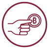

Together, newsrooms and readers are building the future of sustainable, trustworthy journalism for a New American Century.
Now more than ever, newsrooms need scalable solutions for our changing times. At Stringr, we're bringing journalism's stakeholders together to create something different.
A marketplace for editors at journalism outlets to bid on and retain high-quality, vetted freelance reporters
Our partner newsrooms believe in rigorous journalism and news for and by the people. From legacy institutions to feisty startups, we're working with the best outlets still operating.
A subscription service for newsletters, podcasts, and livestreams by fiercely independent journalists
Readers can support their favorite, most trusted reporters through subscribing to their personal content channels.

A crypto exchange turning trustworthy impact journalism into trustless currency
Stringr accepts all major newsroom cryptocurrencies. Our in-house accounting team even helps journalists reconcile their reporting income with UBI taxes.